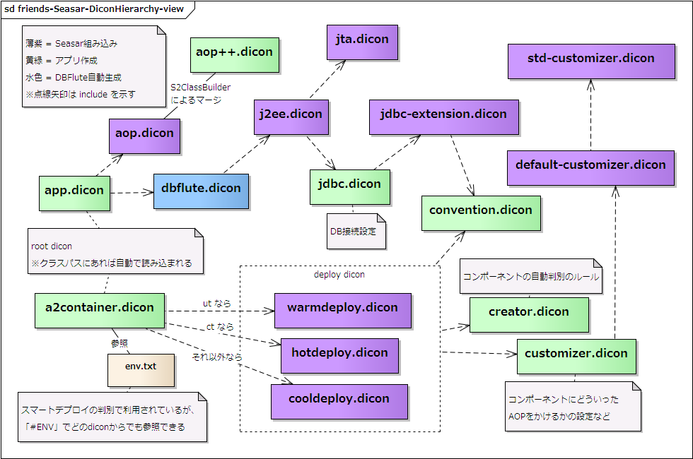

Seasar(S2Container)の取扱い
${indexlist}基本情報
- 対応バージョン
- S2Container 2.4.x 以上
DI設定ファイル (dbflute.dicon)
DBFluteは、Generateタスクにて DBFluteのコンポーネントが登録されている dbflute.dicon を自動生成します。主には、Behavior と allcommon のクラスが登録されています。
この dbflute.dicon が アプリケーションのDI設定ファイルから参照されるように設定 することで、アプリケーションのコンポーネントからDBFluteのコンポーネント(主にBehavior)が利用できるようになります。
e.g. app.dicon にて dbflute.dicon をインクルード @app.dicon
<components>
<include path="convention.dicon"/>
<include path="aop.dicon"/>
<include path="dbflute.dicon"/>
...
</components>
SeasarのDicon構造 (オーソドックスパターン)
図 : SeasarのDicon構造 (オーソドックスパターン) 
{kind=link}
DBFluteは dao.dicon を利用しない
Dolteng などでプロジェクトを自動生成した場合、app.dicon にてデフォルトで dao.dicon がインクルードされている場合がありますが、DBFluteは dao.dicon を全く利用しない ので、アプリケーションで利用しないのであれば削除しても構いません。
独自の j2ee.dicon を利用している場合
DBFluteは dbflute.dicon の中で j2ee.dicon をインクルードすることで jdbc.dicon のデータソースを利用しますが、 Seasarライブラリの中に組み込まれている j2ee.dicon を利用せずに独自の同じ役割のdiconファイルを作成する場合は、 インクルードを適切なものに変更してあげる必要があります。(dbflute.dicon は直接エディタで修正しても再自動生成時に上書きされます)
DBFluteプロパティ dependencyInjectionMap.dfprop の j2eeDiconResourceName プロパティに、独自のファイル名を指定して再自動生成して下さい。
dbflute.diconの名前を変更したい場合
DBFluteプロパティ dependencyInjectionMap.dfprop の dbfluteDiconFileName プロパティに、独自のファイル名を指定して再自動生成して下さい。(古いファイルは手動で削除)
様々な微調整のためのプロパティ
その他、様々な微調整プロパティが用意されています。
最初から LinkageError 対策を
必須ではありませんが、HotDeploy を利用しての開発をする場合は、最初から LinkageError 対策をすることをお奨めします。
DIの方法 (Behavior)
DI管理されているコンポーネントクラスにおいて Behavior のプロパティを定義するとインジェクトされます。 方法が幾つかありますのでアプリケーションで統一的な実装をすると良いでしょう。
プロパティ名について
プロパティ名は、Behaviorのクラス名の先頭を小文字(dbflute.dicon上のコンポーネント名) にしたものになります。例えば、MemberBhv クラスなら、memberBhv となります。
Behaviorは、個別個別のインターフェースを持たないコンポーネントのため、Seasar においては、型による自動バインディングは利用できませんので、プロパティ名を間違えないように注意して下さい。 (必ずプロパティ名での自動バインディングになります)
フィールドインジェクション
Getter/Setterを作らず、インスタンス変数(フィールド)に対して直接DI(フィールドインジェクション)することができます。 その場合、インスタンス変数名がそのままコンポーネント名として扱われ、その名前でコンポーネントが識別されます。 よって、先頭にアンダースコアを付けるとDIされませんのでご注意ください。
e.g. フィールドダイレクト(Resourceアノテーション利用) {Pageクラス} @Java
public class XxxPage {
@Resource
protected MemberBhv memberBhv;
...
}
Binding アノテーションは、protected の場合は必須で、public の場合は必須ではありません。 通常、Behavior を public にする必要性はないので、フィールドダイレクトであれば、Binding アノテーションをしっかり付けて、 protected にする方が良いでしょう。
セッタインジェクション
元来のやり方です。基本的には、フィールドインジェクションで問題ありませんが、Getter/Setterを利用することもできます。memberBhv であれば、setMemberBhv() という名前の Setter を作成することで、Setter 経由のDI (セッタインジェクション) が行われます。 Eclipse であれば、インスタンス変数を先に宣言したあと、右クリックメニュー(Refactor)から Setter を自動生成できます。 (Getter はなくてもDIされます。ほとんどの場合において Setter だけ作成するで良いでしょう)
この場合は、インスタンス変数の名前は任意です。 例えば、変数名の先頭にアンダースコアを付けても、DIは正常行われます。 Eclipse での自動生成のときは、Eclipseで設定をしておけば、アンダースコアを除去して Setter を作ることもできます。
e.g. プロパティ経由 {Pageクラス} @Java
public class XxxPage {
protected MemberBhv memberBhv;
...
@Binding(bindingType = BindingType.MUST)
public void setMemberBhv(MemberBhv memberBhv) {
this.memberBhv = memberBhv;
}
}
Binding アノテーションは必須ではありませんが、細かくDIの挙動を調整するのに便利です。この場合、そのアノテーションを付けるところは Setter です。bindingType で MUST を付けると、なんらかの原因でDIできなかったときに明示的な例外として検知できます。習慣的に付けるようにすると良いでしょう。
HotDeployの取扱い
外だしSQLファイルはHotDeployされる
DBFluteで対応している HotDeploy は、外だしSQLです。HotDeployモードで、アプリケーション起動中に(外だし)SQLを修正すると、 その修正された内容が次のリクエストで反映されます。
自動生成クラスはHotDeployされない
DBFluteで自動生成したクラス(Behaviorも含め)はHotDeploy対象外です。
再自動生成が、例えば、実装中に五分おきに発生する、というような状況は考えにくいため、 再自動生成したクラスの動的反映のメリットは少ないと考えています。また、Behavior や ConditionQuery、Entity の Exクラス に再利用メソッドを実装する場合も、メソッドの役割的に発生頻度が(全体のコードから比較して)多いものではないということ、そして、 そのような再利用を目的としたメソッドは実装したらすぐに単体テストコードを書くということが多いため(つまりアプリ起動中に実装するようなものではない)、 ということから、DBFluteが自動生成するクラスに関しては、HotDeployは(あまり)必要ではないと判断しています。まあ、ただ...
HotDeployされてほしくないクラスをロード
DBFluteの中のHotDeployされて欲しくないクラスを、初期化時にあらかじめロードして、HotDeploy対象にならないようにしています。 具体的には、AccessContext や LikeSearchOption などの、HotDeploy対象の業務クラスの中で利用されやすいユーティリティクラスです。但し、これらは DBFlute-0.9.0 になる前のバージョンでの構成で必要な処理であって、共通クラスをDBFluteランタイムに取り込んだ構成では不要かもしれません(わからない)。 ただ、再現もままならない微妙な問題に対する処理なので、不要であっても損することは全くないのでそのままにしてあります。
DBFluteのクラスでLinkageErrorが発生したら
ルートパッケージ(HotDeploy対象となるパッケージ)配下にDBFluteの自動生成クラスが配置されている場合は、(ほんの時折ですが) LinkageError が発生する可能性があります。(CoolDeployモードだと発生しない、ということを確認の上)その場合は、 convention.dicon にて NamingConventionImpl の addRootPackageName にDBFluteのクラスの基底パッケージ(packageBase)を設定すると解決します(解決する可能性があります)。
e.g. convention.dicon で DBFluteのクラス を明示的にHotDeploy対象から外す @convention.dicon
<component class="org.seasar.framework.convention.impl.NamingConventionImpl">
<initMethod name="addIgnorePackageName">
<arg>"com.example.dbflute.basic.dbflute"</arg>
</initMethod>
</component>
SqlLogRegistryの取扱い
SqlLogHandlerがお奨め
DBFluteでは代替機能として SqlLogHandler を用意しており、こちらをお奨め しています。
SqlLogRegistryはデフォルトで無効
SqlLogRegistryは、デフォルトで無効になっています(DBFluteInitializerで明示的に無効にしています)。 この機能は、特定の要件が発生した場合に利用するものであり、必要となるアプリとならないアプリでは、前者の方が多いと考えているからです。 必要としていないのに、SqlLogRegistryが有効になっていると、Sqlのログを構築、保持する処理が無駄に入ってしまういます。
SqlLogRegistryを有効にするには
DBFluteConfig の useSqlLogRegistry を true に設定します。
SqlLogRegistryの利用は全てリフレクション
DBFlute内部での SqlLogRegistry への参照、利用は、全てリフレクション経由で行われています。 特定のDIコンテナ依存しないようにしているためです。 実質的には、下位互換のためにSqlLogRegistryサポートしている、と言っても過言ではありません。(基本的には SqlLogHandler の利用をお奨めしています)
SelectableDataSource
冗長化複数DBに対応するための機能が Seasar には備わっています。
Exampleのススメ
Seasar(S2Container) を使ったExample実装 dbflute-seasar-example があります。